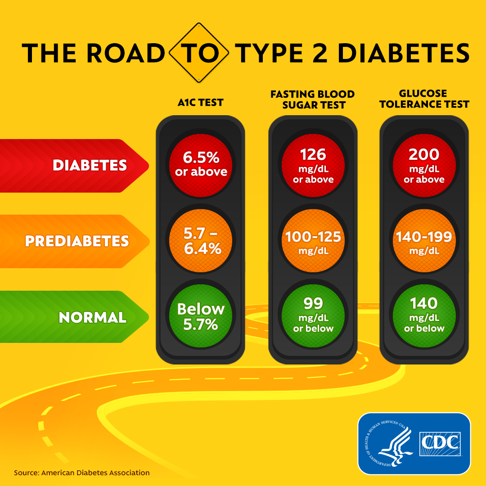

This is demo text Type 1 is not preventable since it is genetically based on family history and is considered an autoimmune condition in which the body does not produce insulin.
Age does not play a role in whether you develop type 1 diabetes since you can develop it at any age. It is more common in children, teenagers, and young adults.

Type 2 can be prevented or at least can be delayed with proven lifestyle changes. The risk factors for type 2 diabetes are:
Prediabetes, overweightness, 45 years or older, having a parent or sibling with type 2 diabetes, being physically active less than 3 times a week, having had gestational diabetes (diabetes during pregnancy), or having given birth to a baby that weighed over 9 pounds.
If you have non-alcoholic fatty liver disease, you may also be a risk for type 2.
Prediabetes is where you are at risk of developing diabetes. The risk factors are the same risk factors as type 2 diabetes. Prediabetes can be prevented or reversed with proven lifestyle changes such as losing weight, eating a healthy diet, and getting regular physical activity.